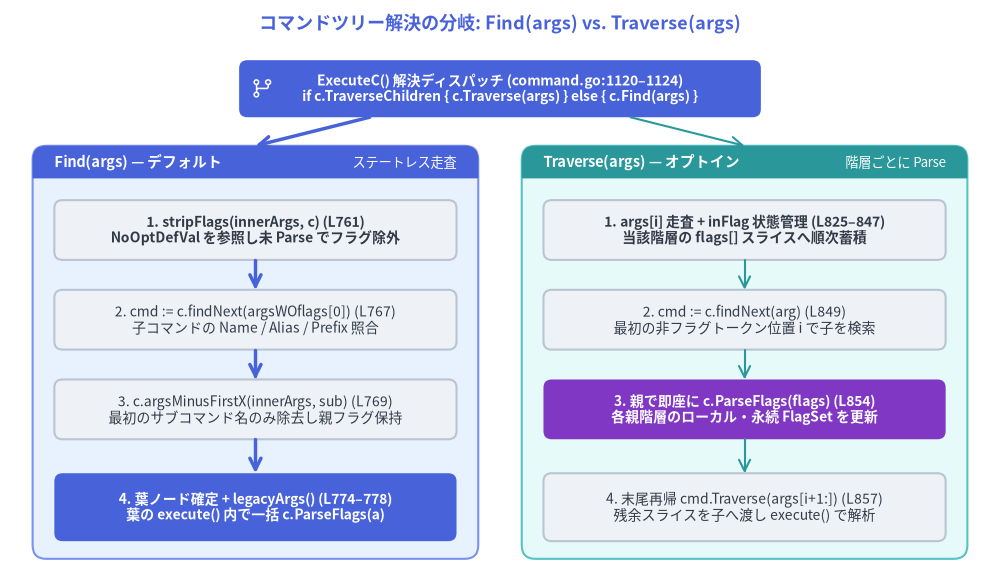
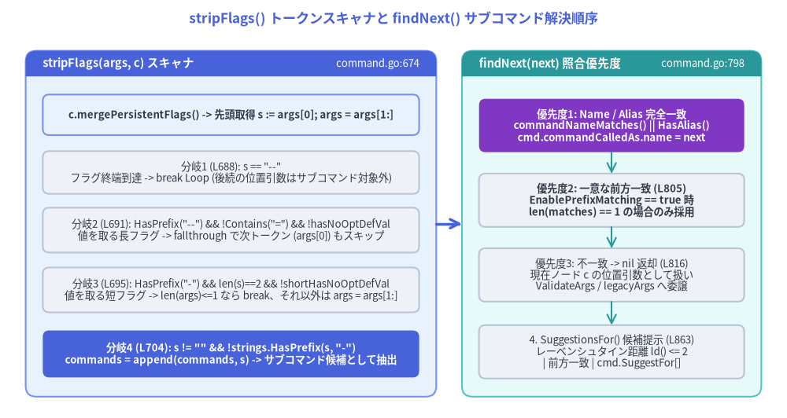

コマンド解決とフラグ除去パーサー（Find / Traverse / stripFlags）
Cobra がコマンドのライフサイクルフックを実行したりフラグ制約を検証したりする前段階として、コマンドツリー内のどの *Command ノードが今回の呼び出しを担当するかを解決する必要があります。os.Args[1] を常にサブコマンド名とみなす単純な CLI ルーターとは異なり、POSIX/GNU 準拠の CLI ではルートの永続フラグ（および空白区切りのフラグ値）がサブコマンドトークンの 前・中間・後ろのどこにでも 出現し得ます（例: app --config prod.yaml -v server --port 8080 start）。

Source Code
from drawlib.canvas import save, setup
from drawlib.icons import phosphor
from drawlib.lines import line
from drawlib.shapes import rectangle
from drawlib.smartarts import Panel
from drawlib.styles import Styles
from drawlib.text import text
setup(width=184, height=108)
text(
(92, 103.5),
"コマンドツリー解決の分岐: Find(args) vs. Traverse(args)",
style=Styles.PrimaryBold.patch(text_size=13.0),
)
# Top Dispatch Router
rectangle(
(92, 91.5),
width=96,
height=10.5,
style=Styles.PrimaryFlat.patch(shape_r=1.5),
text="ExecuteC() 解決ディスパッチ (command.go:1120–1124)\nif c.TraverseChildren { c.Traverse(args) } else { c.Find(args) }",
text_style=Styles.WhiteBold.patch(text_size=10.0),
)
phosphor.git_branch((48, 91.5), width=4.6, style=Styles.White)
# Left Panel: Find(args) Default Mode
Panel(
"Find(args) — デフォルト",
"ステートレス走査",
style=Styles.PrimaryNeutral,
header_style=Styles.PrimaryFlat,
text_style=Styles.WhiteBold.patch(text_size=10.5),
description_style=Styles.White.patch(text_size=9.5),
header_height=6.0,
).draw((6, 5), width=82, height=76)
rectangle(
(47, 65.5),
width=74,
height=11,
style=Styles.Neutral.patch(shape_r=1.5),
text="1. stripFlags(innerArgs, c) (L761)\nNoOptDefVal を参照し未 Parse でフラグ除外",
text_style=Styles.DarkBold.patch(text_size=10.0),
)
rectangle(
(47, 49.0),
width=74,
height=11,
style=Styles.Neutral.patch(shape_r=1.5),
text="2. cmd := c.findNext(argsWOflags[0]) (L767)\n子コマンドの Name / Alias / Prefix 照合",
text_style=Styles.Dark.patch(text_size=10.0),
)
rectangle(
(47, 32.5),
width=74,
height=11,
style=Styles.Neutral.patch(shape_r=1.5),
text="3. c.argsMinusFirstX(innerArgs, sub) (L769)\n最初のサブコマンド名のみ除去し親フラグ保持",
text_style=Styles.Dark.patch(text_size=10.0),
)
rectangle(
(47, 14.5),
width=74,
height=12.5,
style=Styles.PrimaryFlat.patch(shape_r=1.5),
text="4. 葉ノード確定 + legacyArgs() (L774–778)\n葉の execute() 内で一括 c.ParseFlags(a)",
text_style=Styles.WhiteBold.patch(text_size=10.0),
)
line((47, 60.0), (47, 54.5), arrow_head="->", style=Styles.PrimaryBold)
line((47, 43.5), (47, 38.0), arrow_head="->", style=Styles.PrimaryBold)
line((47, 27.0), (47, 20.75), arrow_head="->", style=Styles.PrimaryBold)
# Right Panel: Traverse(args) Mode
Panel(
"Traverse(args) — オプトイン",
"階層ごとに Parse",
style=Styles.SecondaryNeutral,
header_style=Styles.SecondaryFlat,
text_style=Styles.WhiteBold.patch(text_size=10.5),
description_style=Styles.White.patch(text_size=9.5),
header_height=6.0,
).draw((96, 5), width=82, height=76)
rectangle(
(137, 65.5),
width=74,
height=11,
style=Styles.Neutral.patch(shape_r=1.5),
text="1. args[i] 走査 + inFlag 状態管理 (L825–847)\n当該階層の flags[] スライスへ順次蓄積",
text_style=Styles.DarkBold.patch(text_size=10.0),
)
rectangle(
(137, 49.0),
width=74,
height=11,
style=Styles.Neutral.patch(shape_r=1.5),
text="2. cmd := c.findNext(arg) (L849)\n最初の非フラグトークン位置 i で子を検索",
text_style=Styles.Dark.patch(text_size=10.0),
)
rectangle(
(137, 32.5),
width=74,
height=11,
style=Styles.AccentFlat.patch(shape_r=1.5),
text="3. 親で即座に c.ParseFlags(flags) (L854)\n各親階層のローカル・永続 FlagSet を更新",
text_style=Styles.WhiteBold.patch(text_size=10.0),
)
rectangle(
(137, 14.5),
width=74,
height=12.5,
style=Styles.Neutral.patch(shape_r=1.5),
text="4. 末尾再帰 cmd.Traverse(args[i+1:]) (L857)\n残余スライスを子へ渡し execute() で解析",
text_style=Styles.Dark.patch(text_size=10.0),
)
line((137, 60.0), (137, 54.5), arrow_head="->", style=Styles.Secondary)
line((137, 43.5), (137, 38.0), arrow_head="->", style=Styles.Secondary)
line((137, 27.0), (137, 20.75), arrow_head="->", style=Styles.Secondary)
# Top Router to Left & Right Panels
line((68, 86.25), (47, 81.0), arrow_head="->", style=Styles.PrimaryBold)
line((116, 86.25), (137, 81.0), arrow_head="->", style=Styles.Secondary)
save()
1. 2つのコマンド解決戦略: Find と Traverse
ExecuteC() (command.go:1120–1124) では、ルートコマンドの TraverseChildren ブールフィールド (command.go:230) に応じて2種類のツリー走査アルゴリズムを切り替えます。
var flags []string
if c.TraverseChildren {
cmd, flags, err = c.Traverse(args)
} else {
cmd, flags, err = c.Find(args)
}
1.1 Find(args []string) — ステートレスな下降探索 (command.go:757–779)
デフォルト設定 (TraverseChildren == false) では、Cobra は中間の親コマンドに対して ParseFlags を一切呼び出さずに 目的の葉コマンドを特定します。内部の再帰クロージャ innerfind (command.go:760–772) は、stripFlags でフラグトークンを読み飛ばしてサブコマンド名を見つけ出しつつ、元のフラグトークン群を innerArgs に温存したまま葉コマンドへ引き継ぎます。
func (c *Command) Find(args []string) (*Command, []string, error) {
var innerfind func(*Command, []string) (*Command, []string)
innerfind = func(c *Command, innerArgs []string) (*Command, []string) {
argsWOflags := stripFlags(innerArgs, c)
if len(argsWOflags) == 0 {
return c, innerArgs
}
nextSubCmd := argsWOflags[0]
cmd := c.findNext(nextSubCmd)
if cmd != nil {
return innerfind(cmd, c.argsMinusFirstX(innerArgs, nextSubCmd))
}
return c, innerArgs
}
commandFound, a := innerfind(c, args)
if commandFound.Args == nil {
return commandFound, a, legacyArgs(commandFound, stripFlags(a, commandFound))
}
return commandFound, a, nil
}
Find における重要な設計上の不変条件は以下の4点です。
- 探索中の
FlagSet.Parse副作用ゼロ:stripFlags(innerArgs, c)は親の永続フラグ定義を認識するためにc.mergePersistentFlags()(command.go:678) を呼びますが、フラグ値のパース（状態変更）は一切行いません。 argsMinusFirstXによるサブコマンドトークンのみの外科的除去:c.findNext(nextSubCmd)が子コマンドcmdに一致すると、innerfindはc.argsMinusFirstX(innerArgs, nextSubCmd)を子に渡します。nextSubCmdより前に指定された永続フラグ（例:root --kubeconfig ~/.kube/config get podsの--kubeconfig ~/.kube/config）はinnerArgs内にそのまま残り、最終的にget.execute(flags)のc.ParseFlags(a)(command.go:919) で継承永続フラグとローカルフラグがまとめて1回でパースされます。Find下で親のローカル（非永続）フラグがエラーになる理由: 親で指定されたフラグもすべて葉コマンドのParseFlagsに渡されるため、親のFlags()（ローカル）にしか存在せずPersistentFlags()に登録されていないフラグを親の位置で指定すると、葉コマンドのParseFlagsでunknown flagエラーとなります。legacyArgsによる未知サブコマンド検出 (command.go:775–777,args.go:28–39): 解決されたcommandFoundのArgsバリデータがnilの場合、Findは返却直前にlegacyArgs(commandFound, stripFlags(a, commandFound))を実行します。commandFoundがサブコマンドを持つルートコマンド (!cmd.HasParent() && cmd.HasSubCommands()) であり、かつ未消費の非フラグ引数 (len(args) > 0) が残っている場合、以下のエラーを返します。fmt.Errorf("unknown command %q for %q%s", args[0], cmd.CommandPath(), cmd.findSuggestions(args[0]))
1.2 Traverse(args []string) — 階層ごとの逐次フラグ解析 (command.go:821–860)
親コマンド固有の ローカル（非永続）フラグ をサブコマンドと同時に受け付けたい場合（例: docker --tls -D container ls -a）、ルートコマンドで TraverseChildren: true を有効化すると Traverse が使用されます。
func (c *Command) Traverse(args []string) (*Command, []string, error) {
flags := []string{}
inFlag := false
for i, arg := range args {
switch {
// A long flag with a space separated value
case strings.HasPrefix(arg, "--") && !strings.Contains(arg, "="):
// TODO: this isn't quite right, we should really check ahead for 'true' or 'false'
inFlag = !hasNoOptDefVal(arg[2:], c.Flags())
flags = append(flags, arg)
continue
// A short flag with a space separated value
case strings.HasPrefix(arg, "-") && !strings.Contains(arg, "=") && len(arg) == 2 && !shortHasNoOptDefVal(arg[1:], c.Flags()):
inFlag = true
flags = append(flags, arg)
continue
// The value for a flag
case inFlag:
inFlag = false
flags = append(flags, arg)
continue
// A flag without a value, or with an `=` separated value
case isFlagArg(arg):
flags = append(flags, arg)
continue
}
cmd := c.findNext(arg)
if cmd == nil {
return c, args, nil
}
if err := c.ParseFlags(flags); err != nil {
return nil, args, err
}
return cmd.Traverse(args[i+1:])
}
return c, args, nil
}
1.3 Find と Traverse のアーキテクチャ比較
| 比較軸 | Find(args []string) (command.go:757–779) |
Traverse(args []string) (command.go:821–860) |
|---|---|---|
| 有効化条件 | デフォルト (c.TraverseChildren == false) |
オプトイン (c.TraverseChildren == true) |
| 親のローカルフラグ指定 | 子の ParseFlags で 未知フラグエラー（PersistentFlags のみ可） |
利用可能（各親階層 L854 の c.ParseFlags(flags) で消費） |
ParseFlags の実行回数 |
解決された葉コマンドの c.execute(flags) (L919) で 1回のみ |
通過する各親階層で1回ずつ (L854) ＋ 葉コマンドで1回 (L919) |
| 引数スライスの引き継ぎ | c.argsMinusFirstX(innerArgs, nextSubCmd) でサブコマンド名のみ除去 |
親のフラグを消費し、末尾スライス args[i+1:] (L857) のみを子へ渡す |
| 未知サブコマンドの早期検証 | commandFound.Args == nil の場合 Find() 末尾 (L776) で legacyArgs() を実行 |
c.execute() 内の c.ValidateArgs(argWoFlags) (L968) に委譲 |
-- 終端記号の扱い |
stripFlags (L688) と argsMinusFirstX (L726) の両方で case s == "--": break Loop |
isFlagArg("--") (L750) が false となり c.findNext("--") -> nil で c, args, nil を返却 |
2. トークンスキャナの内部機構: stripFlags・NoOptDefVal・argsMinusFirstX
stripFlags (command.go:674–710) と argsMinusFirstX (command.go:715–748) における最大の課題は、pflag の完全なパース処理を実行せずに 空白区切りのフラグ値 と サブコマンド名 を正確に識別することです。
例えば cmd -f admin と cmd -v admin を比較すると：
-fが--file stringフラグであれば、adminは-fに対するファイル名引数であり、adminサブコマンドではありません。-vが--verbose boolフラグであれば、-vは空白区切りの値を取らないため、直後のadminはadminサブコマンド です。

Source Code
from drawlib.canvas import save, setup
from drawlib.lines import line
from drawlib.shapes import rectangle
from drawlib.smartarts import Panel
from drawlib.styles import Styles
from drawlib.text import text
setup(width=184, height=98)
text(
(92, 93.5),
"stripFlags() トークンスキャナと findNext() サブコマンド解決順序",
style=Styles.PrimaryBold.patch(text_size=12.5),
)
# Left Panel: stripFlags() Token Scanner
Panel(
"stripFlags(args, c) スキャナ",
"command.go:674",
style=Styles.PrimaryNeutral,
header_style=Styles.PrimaryFlat,
text_style=Styles.WhiteBold.patch(text_size=10.5),
description_style=Styles.White.patch(text_size=9.5),
header_height=6.0,
).draw((6, 5), width=96, height=81)
rectangle(
(54, 71.0),
width=88,
height=9.5,
style=Styles.PrimaryNeutral.patch(shape_r=1.5),
text="c.mergePersistentFlags() -> 先頭取得 s := args[0]; args = args[1:]",
text_style=Styles.DarkBold.patch(text_size=9.5),
)
rectangle(
(54, 57.5),
width=88,
height=10.0,
style=Styles.Neutral.patch(shape_r=1.5),
text="分岐1 (L688): s == \"--\"\nフラグ終端到達 -> break Loop (後続の位置引数はサブコマンド対象外)",
text_style=Styles.Dark.patch(text_size=9.5),
)
rectangle(
(54, 44.0),
width=88,
height=10.5,
style=Styles.Neutral.patch(shape_r=1.5),
text="分岐2 (L691): HasPrefix(\"--\") && !Contains(\"=\") && !hasNoOptDefVal\n値を取る長フラグ -> fallthrough で次トークン (args[0]) もスキップ",
text_style=Styles.Dark.patch(text_size=9.5),
)
rectangle(
(54, 30.0),
width=88,
height=10.5,
style=Styles.Neutral.patch(shape_r=1.5),
text="分岐3 (L695): HasPrefix(\"-\") && len(s)==2 && !shortHasNoOptDefVal\n値を取る短フラグ -> len(args)<=1 なら break、それ以外は args = args[1:]",
text_style=Styles.Dark.patch(text_size=9.5),
)
rectangle(
(54, 15.0),
width=88,
height=11.0,
style=Styles.PrimaryFlat.patch(shape_r=1.5),
text="分岐4 (L704): s != \"\" && !strings.HasPrefix(s, \"-\")\ncommands = append(commands, s) -> サブコマンド候補として抽出",
text_style=Styles.WhiteBold.patch(text_size=9.5),
)
# Right Panel: findNext() & SuggestionsFor()
Panel(
"findNext(next) 照合優先度",
"command.go:798",
style=Styles.SecondaryNeutral,
header_style=Styles.SecondaryFlat,
text_style=Styles.WhiteBold.patch(text_size=10.5),
description_style=Styles.White.patch(text_size=9.5),
header_height=6.0,
).draw((108, 5), width=70, height=81)
rectangle(
(143, 68.5),
width=62,
height=12.5,
style=Styles.AccentFlat.patch(shape_r=1.5),
text="優先度1: Name / Alias 完全一致\ncommandNameMatches() || HasAlias()\ncmd.commandCalledAs.name = next",
text_style=Styles.WhiteBold.patch(text_size=9.5),
)
rectangle(
(143, 51.0),
width=62,
height=12.5,
style=Styles.Neutral.patch(shape_r=1.5),
text="優先度2: 一意な前方一致 (L805)\nEnablePrefixMatching == true 時\nlen(matches) == 1 の場合のみ採用",
text_style=Styles.DarkBold.patch(text_size=9.5),
)
rectangle(
(143, 33.5),
width=62,
height=12.5,
style=Styles.Neutral.patch(shape_r=1.5),
text="優先度3: 不一致 -> nil 返却 (L816)\n現在ノード c の位置引数として扱い\nValidateArgs / legacyArgs へ委譲",
text_style=Styles.Dark.patch(text_size=9.5),
)
rectangle(
(143, 15.5),
width=62,
height=12.5,
style=Styles.Neutral.patch(shape_r=1.5),
text="4. SuggestionsFor() 候補提示 (L863)\nレーベンシュタイン距離 ld() <= 2\n| 前方一致 | cmd.SuggestFor[]",
text_style=Styles.Dark.patch(text_size=9.5),
)
line((143, 62.25), (143, 57.25), arrow_head="->", style=Styles.Secondary)
line((143, 44.75), (143, 39.75), arrow_head="->", style=Styles.Secondary)
line((143, 27.25), (143, 21.75), arrow_head="->", style=Styles.Secondary)
# Cross-panel handoff arrow
line((102, 45.5), (108, 45.5), arrow_head="->", style=Styles.PrimaryBold)
save()
2.1 hasNoOptDefVal と shortHasNoOptDefVal (command.go:654–672)
github.com/spf13/pflag の *flag.Flag 構造体は NoOptDefVal string フィールドを持っています。ブール型フラグ (Bool / BoolP) やカウンタ型フラグ (Count / CountP) では、pflag が自動的に flag.NoOptDefVal = "true"（または "+1"）を設定します。これは「=value なしでフラグ単体が指定された場合、既定値を適用し 直後のトークンを値として消費しない」ことを表します。
Cobra は以下の2つのヘルパー関数 (command.go:654–672) でこのフィールドを直接参照します。
func hasNoOptDefVal(name string, fs *flag.FlagSet) bool {
flag := fs.Lookup(name)
if flag == nil {
return false
}
return flag.NoOptDefVal != ""
}
func shortHasNoOptDefVal(name string, fs *flag.FlagSet) bool {
if len(name) == 0 {
return false
}
flag := fs.ShorthandLookup(name[:1])
if flag == nil {
return false
}
return flag.NoOptDefVal != ""
}
[!IMPORTANT] 未登録フラグに対するフォールバック挙動:
fs.Lookup(name)またはfs.ShorthandLookup(name[:1])がnilを返した場合（未知のフラグや、子コマンド側でのみ定義されたローカルフラグなど）、両関数はfalseを返します。その結果、stripFlagsは安全側の倒し方として「=を含まない未知の--flagや-fは 直後のトークンを値として消費する」と判定します。
2.2 stripFlags の4分岐スイッチ (command.go:674–710)
stripFlags(args []string, c *Command) []string は、まず c.mergePersistentFlags() (L678) を呼び出して祖先からの継承永続フラグを flags := c.Flags() (L681) に統合した上で、args を先頭から走査します。
stripFlags の分岐 (command.go:687–706) |
判定条件 | スキャナの動作 | トークン列の具体例 |
|---|---|---|---|
1. -- 終端記号 (L688) |
s == "--" |
即座に break Loop（-- 以降はすべて位置引数でありサブコマンド候補にならない） |
app -- server -> commands = []（server は app の位置引数） |
2. 空白区切り値を持つ長フラグ (L691) |
strings.HasPrefix(s, "--") && !strings.Contains(s, "=") && !hasNoOptDefVal(s[2:], flags) |
fallthrough で分岐3へ落ち、直後の値トークン (args = args[1:]) をスキップ |
app --config prod.yaml run -> --config と prod.yaml を飛ばし ["run"] を抽出 |
3. 空白区切り値を持つ短フラグ (L695) |
strings.HasPrefix(s, "-") && !strings.Contains(s, "=") && len(s) == 2 && !shortHasNoOptDefVal(s[1:], flags) |
len(args) <= 1 なら break Loop、それ以外は args = args[1:]; continue |
app -c prod.yaml run -> -c と prod.yaml を飛ばし ["run"] を抽出 |
4. 非フラグトークン (L704) |
s != "" && !strings.HasPrefix(s, "-") |
commands = append(commands, s) でサブコマンド候補に追加 |
app -v --port=8080 run -> -v (NoOptDefVal="true") と --port=8080 (Contains("=")) を無視し ["run"] を抽出 |
[!NOTE] 連結短フラグ (
len(s) > 2) の扱い: 分岐3がlen(s) == 2を条件としている点に注目してください。-vvvのようなブール短フラグの連結や、-fconfig.yamlのように空白なしで値を結合した短フラグはlen(s) > 2となるため、先頭が"-"であることから分岐4では除外されつつ、分岐3でも次のトークンを誤って消費しない仕組みになっています。
2.3 なぜ argsMinusFirstX は最初の非フラグ一致のみを除去するのか (command.go:715–748)
Find が親 c から子 cmd = c.findNext(nextSubCmd) へ再帰降下する際、innerArgs から nextSubCmd を取り除く必要があります (command.go:769)。もし単純に「文字列 nextSubCmd に一致する要素をすべて消す」あるいは「フラグ文脈を考慮せず最初の nextSubCmd を消す」実装にすると、以下のような実運用コマンドが破損します。
- サブコマンド名と同名の位置引数の保護 (
command.go:712–713): ソースコメントに明記されている通り、openshift admin policy add-role-to-user admin my-userというコマンドでは、"admin"がargs[0]（サブコマンド名）とargs[3]（my-userに付与するロール名の位置引数）の2回出現します。argsMinusFirstXは最初の非フラグトークンs == xを見つけた時点で即座にスライスを結合して返却するため (L740–743)、後続の"admin"引数が失われません。if s == x { ret := make([]string, 0, len(args)-1) ret = append(ret, args[:pos]...) ret = append(ret, args[pos+1:]...) return ret } - フラグ値との衝突回避 (
command.go:729–735):app --user admin admin statusのように、最初の"admin"が--userフラグの値であり、2番目の"admin"がサブコマンド名である場合、argsMinusFirstXはstripFlagsと同じ!hasNoOptDefVal/!shortHasNoOptDefVal判定を行ってpos++(L734) でフラグ値を飛び越えるため、--user adminを壊さずにインデックス2のサブコマンド"admin"のみを正確に除去します。 --境界の尊重 (command.go:726–728):s == "--"に到達した場合は即座にbreak Loopし、--より後ろのトークンは一切削除しません。
3. サブコマンド照合の優先順位とタイポ候補提示 (findNext / SuggestionsFor)
3.1 findNext(next string) の照合アルゴリズム (command.go:798–817)
Find (L767) と Traverse (L849) はともに c.findNext(next) を呼び出して、子コマンドスライス c.commands から遷移先を決定します。
func (c *Command) findNext(next string) *Command {
matches := make([]*Command, 0)
for _, cmd := range c.commands {
if commandNameMatches(cmd.Name(), next) || cmd.HasAlias(next) {
cmd.commandCalledAs.name = next
return cmd
}
if EnablePrefixMatching && cmd.hasNameOrAliasPrefix(next) {
matches = append(matches, cmd)
}
}
if len(matches) == 1 {
return matches[0] // #nosec G602
}
return nil
}
単一ループ内で以下の2段階の優先順位が厳密に適用されます。
- 優先度1 — コマンド名またはエイリアスの完全一致 (
L801–804):commandNameMatches(cmd.Name(), next)(command.go:1928–1934) は、パッケージグローバル変数cobra.EnableCaseInsensitive(cobra.go:62、デフォルトfalse) がtrueの場合はstrings.EqualFold(s, t)、それ以外はs == tで比較します。cmd.HasAlias(next)(command.go:1550–1558) はcmd.Aliasesスライス内の各エイリアスに対して同じくcommandNameMatchesを適用します。- 一致した時点で
cmd.commandCalledAs.name = nextを記録し（のちにExecuteCのL1137でcalled = trueがセットされるとcmd.CalledAs()から取得可能）、即座にcmdを返します。
- 優先度2 — 一意な前方一致 (
L805–814):- グローバル変数
cobra.EnablePrefixMatching(cobra.go:55、デフォルトfalse) がtrueの場合のみ有効になります。 cmd.hasNameOrAliasPrefix(next)(command.go:1571–1583) がc.Name()またはc.Aliasesの前方一致を判定し（一致した名前またはエイリアスでc.commandCalledAs.nameを更新）、候補スライスmatchesに追加します。- 全子コマンド走査後、
len(matches) == 1（一意に特定できた場合）に限りmatches[0]を返します。複数のサブコマンドが同じプレフィックスを持つ場合（例:statusとstartに対するst）は曖昧な実行を防ぐためnilを返します。
- グローバル変数
3.2 レーベンシュタイン距離 (ld) と SuggestionsFor (command.go:781–796, 863–881, cobra.go:192–223)
legacyArgs (args.go:36) や OnlyValidArgs (args.go:61) が未知のサブコマンド・引数を検出すると、c.findSuggestions(arg) (command.go:781–796) が呼び出されて "Did you mean this?" メッセージを生成します。
c.DisableSuggestionsがtrueの場合は空文字列""を返します。c.SuggestionsMinimumDistance <= 0の場合、デフォルト閾値としてc.SuggestionsMinimumDistance = 2を設定します (L785–787)。c.SuggestionsFor(typedName)(command.go:863–881) は、cmd.IsAvailableCommand()がtrueであるすべての子コマンドを走査し、以下の3条件のいずれかを満たす場合に候補リストへ追加します。- レーベンシュタイン編集距離 (
L867–868):ld(typedName, cmd.Name(), true) <= c.SuggestionsMinimumDistance。ld(s, t string, ignoreCase bool) int(cobra.go:192–223) はサイズ(len(s)+1) × (len(t)+1)の2次元動的計画法テーブルd[i][j]を構築し、文字の挿入・削除・置換の最小編集距離を $O(|s| \cdot |t|)$ で算出します。 - 大文字小文字を区別しない前方一致 (
L869):strings.HasPrefix(strings.ToLower(cmd.Name()), strings.ToLower(typedName))。 - 明示的な
SuggestFor登録 (L873–877):cmd.SuggestFor(command.go:71) に登録された文字列とのstrings.EqualFold(typedName, explicitSuggestion)一致（編集距離が離れているdelete->removeのような意味的類義語をサジェストするために使用されます）。
- レーベンシュタイン編集距離 (